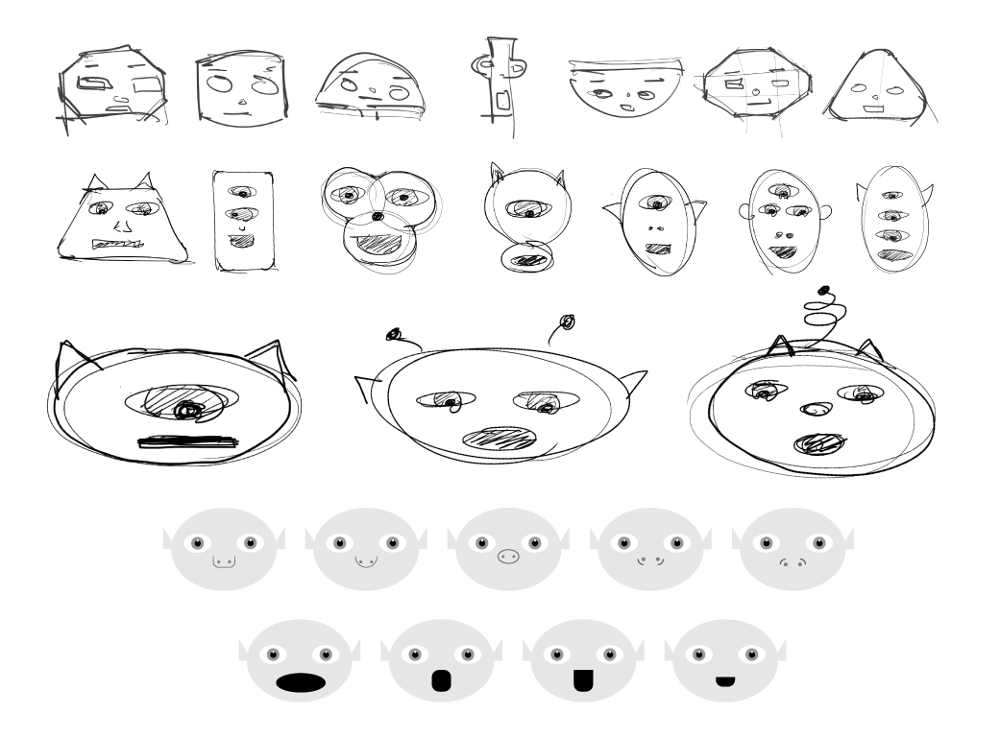
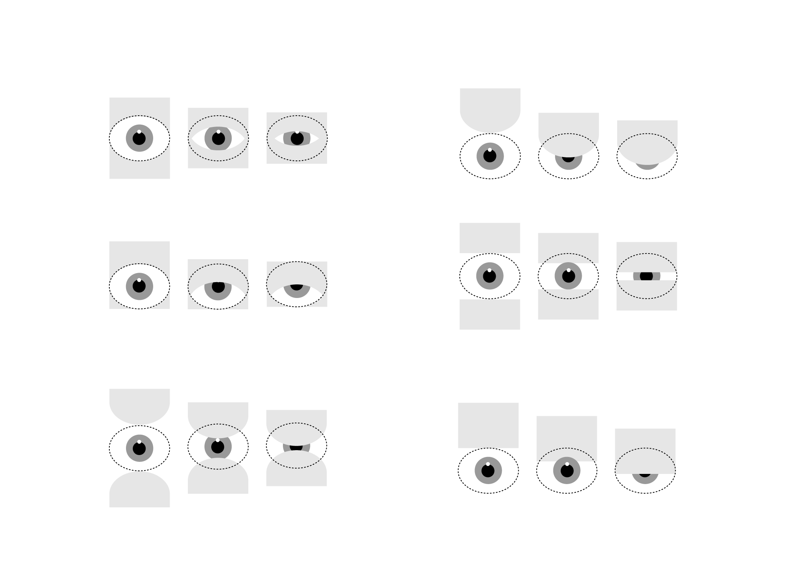

Zwerpy
Zwerpy started as a tiny experiment in voice recognition and quickly expanded into exploring CSS animations, JavaScript/jQuery, device interactions, user flows, and subtlties of human facial expression and emotion.The Process
Proof of Concept
I started by researching and testing voice recognition libraries and chose Annyang for its simplicity and lightweight nature. Then I built a rudimentary POC that demonstrated the ability to recognize spoken words and call a color-changing function as a result.

Character Exploration
I explored different character designs via hand sketching and digital illustration. It was important for the character to convey friendliness, which ultimately translated into an overall wider face and large eyes.

Blink Exploration
Based on what I knew was possible with CSS and JS, I experimented with different ways the blink could work and how it would appear in motion. While the end product uses a clipping mask, this exploration helped me understand the different ways this could be achieved.
Eye Prototype
I began prototyping the most expressive and complex facial feature, the eye. Every possible desired eye movement was turned into a CSS class. Clicking a given control button triggers a function that adds one or more classes to the eye, each changing the shape and/or position of the eye.
Face Prototype
Once the eyes were prototyped, I scaled up the same control board concept to entail all facial features, including eyebrows, nose, and mouth. One or more base animations combine together to create a specific emotion animations.User Flow & Low-Fidelity Wireframing
With the emotions prototyped, I needed to design the UX experience and story behind Zwerp, the alien. I started with a sketch of the user flow, which translated into rudimentary wireframes.Touch vs Click
One of the technical limitations of the voice recognition library was that it didn't work with the microphone on mobile or tablet touch devices. For simplicity's sake (because there are now desktops/laptops with touchscreens), I decided to make a key user experience distinction between touch devices and click devices. This distinction is made upon the first button interaction,and the subsequent userflow and associated verbiage are displayed accordingly.
Screen Size Accommodations
With a huge variation in screen sizes today, it was important to remain flexible while accommodating for the widest range of screens without sacrificing usability in details like font and button sizes. For mobile devices, it can work well on screens as small as the iPhone 5's. Based on data from w3schools, I designed Zwerpy to work on screens as small as 1366px x 768px to accommodate 35% web users who use this screen size, and subsequently all users with resolutions higher than this.